GUUS é um herói nada convencional que foca em manter os aliados vivos com a ajuda de um exército de gansos!
Este velhinho e seu ganso dourado protegem toda a equipe de danos explosivos e danos ao longo do tempo. Enquanto isso, gansos cinzentos investem contra os inimigos, atrapalhando e afastando-os!
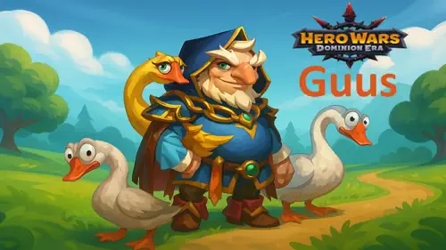
Guia do Guus - Hero Wars: Dominion Era, um jogo desenvolvido pela Nexters.
Quem é Guus?
Guus pode parecer apenas um velhinho com um ganso, mas na Dominion Era, ele é um estrategista que salva vidas. Suas habilidades peculiares são surpreendentemente poderosas, combinando cura, proteção e perturbação em um só pacote emplumado.
Classe: Curandeiro
Posição: Linha do Meio
Atributo Principal: Força
Quando os inimigos atacam com força, Guus responde com magia do ganso dourado que protege sua equipe de golpes devastadores. Sua cura escala bem e mantém sua linha de frente firme.
Enquanto isso, seus gansos cinzentos cercam os inimigos, quebrando seu ritmo e causando caos. Ele não é apenas um suporte é uma força emplumada de controle e sobrevivência.
Prós e Contras do Guus – Hero Wars: Web e Facebook
✅ Prós
Cura poderosa de múltiplas fontes: Guus possui quatro habilidades de cura distintas que mantêm os aliados vivos com cura direta e contínua.
Escala com ataque físico: Sua cura escala com ataque físico e Força, permitindo sinergia com glifos e artefatos comuns.
Mecânica da Pena Dourada: Concede aos aliados uma forte cura passiva e uma rede de segurança contra dano letal.
Grande sinergia com tanques e lutadores: Funciona bem em equipes de linha de frente que se beneficiam de cura sustentada.
Suprema eficiente em Energia: Se for interrompido, Guus mantém parte da Energia, permitindo reutilizar sua ultimate mais rapidamente.
Forte com a Bandeira de Recuperação: A cura pode ser ainda mais ampliada com a bandeira certa e o patrono ideal.
❌ Contras
Muito vulnerável a anti-cura: Facilmente anulado por Celeste, especialmente durante a Marcha dos Gansos.
Ultimate pode ser interrompida: Guus não pode agir durante sua ultimate e fica vulnerável a controles como encantamento ou empurrões.
Sem utilidade ofensiva: Produz pouquíssimo dano – os gansos cinzentos exercem pouca pressão no inimigo.
Dependente de posicionamento: A eficácia da cura depende da posição dos aliados durante a ativação do Ganso Dourado.
Necessita investimento: Requer glifos aprimorados, skin de Força e artefatos de nível alto para manter a eficácia.
Prioridade de Melhoria das Habilidades do Guus - Hero Wars: Era do Domínio
Entenda quais habilidades do Guus você deve evoluir primeiro para obter os melhores resultados em cura e suporte em Hero Wars: Era do Domínio.
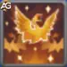
Marcha dos Gansos
Essa é a habilidade suprema do Guus. Por 5 segundos, gansos dourados curam aliados e gansos cinzentos causam dano aos inimigos. A cura e o dano ocorrem a cada 0,5 segundo. No entanto, Guus não pode atacar ou usar outras habilidades durante esse tempo. Se for interrompido, ele mantém parte da Energia com base no tempo restante.
Prioridade de Evolução:Muito Alta – Essa habilidade proporciona o maior impacto de cura em lutas grandes e tem sinergia com suas outras habilidades. Mais poder aqui aumenta significativamente tanto a cura quanto o dano.
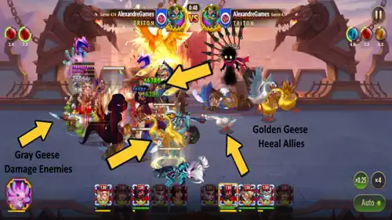
Marcha dos Gansos, Hero Wars Era do Domínio.
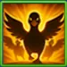
Penas de Ouro
Essa habilidade concede a todos os aliados uma Pena Dourada que os cura ao longo de 5 segundos. Também possui um efeito passivo: enquanto a Marcha dos Gansos estiver ativa, qualquer aliado curado pelos gansos dourados recebe essa pena também.
Prioridade de Evolução:Alta – O efeito de cura é moderado, mas a sinergia passiva com a habilidade suprema aumenta a cura geral durante as lutas. Melhor para manter toda a equipe saudável com o tempo.
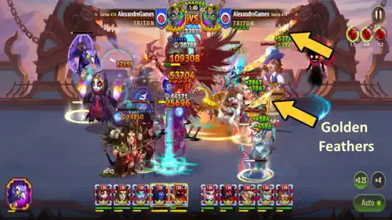
Penas de Ouro, Hero Wars Era do Domínio.
Ganso Guardião
Essa habilidade funciona como um escudo protetor. Se um aliado com uma Pena Dourada estiver prestes a ficar com menos de 25% de vida, essa habilidade o cura antes do golpe acertar e fornece cura adicional com base no tempo restante da pena. Ela é ativada apenas uma vez por pena.
Prioridade de Evolução:Média-Alta – Pode salvar aliados de danos fatais, mas só funciona em momentos específicos. Mesmo assim, evoluí-la aumenta bastante o potencial de salvamento quando ativada.
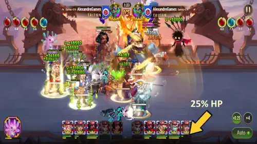
Ganso Guardião, Hero Wars Era do Domínio.
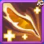
Aplicar Penas
Essa é a habilidade básica de ataque do Guus. Em vez de causar dano aos inimigos, ele cura aliados próximos que ainda não tenham uma pena. É uma cura constante a cada ataque, mas afeta apenas um alvo por vez.
Prioridade de Evolução:Média – Proporciona cura contínua, mas em comparação com suas outras habilidades, o impacto é menor. Ainda assim, é útil em lutas longas ou quando nenhuma outra habilidade está disponível.
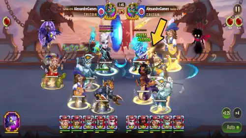
Aplicar Penas, Hero Wars Era do Domínio.
Melhor Mascote para o Guus
Escolher o mascote certo para Guus aumenta sua sobrevivência e poder de cura, especialmente em batalhas prolongadas.
Oliver é o melhor mascote para Guus. Ele aumenta a vida e a armadura do Guus — estatísticas essenciais para um suporte na linha de frente que frequentemente recebe dano em área. Mais importante ainda, a habilidade de patronagem de Oliver cura Guus passivamente sempre que sua vida cai abaixo de 50%, o que complementa o papel de Guus como curandeiro persistente que precisa permanecer vivo para lançar habilidades poderosas como Marcha dos Gansos. Isso aumenta muito sua resistência em lutas longas, especialmente contra equipes com muito dano em área.
Axel oferece um suporte defensivo forte ao reduzir danos explosivos. Sua patronagem garante que Guus não possa sofrer mais do que uma certa porcentagem de sua vida máxima em um único golpe, o que é excelente contra inimigos como Ju, Iris ou K’arkh. Axel é especialmente útil no PvP ou em lutas contra chefes com alto dano em rajadas. No entanto, ele não oferece cura nem sinergia ofensiva, sendo assim um pouco menos ideal que Oliver para o conjunto de habilidades do Guus.
Khorus fornece ataque mágico e armadura, o que ajuda apenas moderadamente Guus, já que ele se beneficia principalmente de ataque físico. Sua mecânica de escudo é mais benéfica para aliados com foco mágico e é menos confiável para Guus. Embora a Aura de Resistência possa ajudar a absorver algum dano físico, é uma ajuda condicional e menos eficaz em comparação com Oliver ou Axel em termos de sobrevivência e sinergia direta com as habilidades do Guus.
Fenris aumenta o ataque físico e a penetração de armadura — ambos são relevantes para a cura de Guus, já que ela é baseada em ataque físico. No entanto, sua habilidade de patronagem adiciona uma chance de cegar inimigos com ataques básicos, o que é muito mais útil para causadores de dano do que para suportes. Como os ataques básicos de Guus são direcionados a aliados para curá-los, o efeito de cegueira não será ativado. Isso torna Fenris o mascote menos adequado para Guus, apesar do bônus de atributos.
Melhor Skin para Guus – Hero Wars: Era do Domínio
Descubra quais skins do Guus oferecem o melhor desempenho em batalha, apoiando seu papel central como suporte e curandeiro baseado em ataque físico.
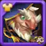
Skin Padrão (Força +1.365)
A Skin Padrão aumenta a Força de Guus, que é seu atributo principal. Isso melhora diretamente sua vida e seu ataque físico, que por sua vez aumentam o poder de cura. Cada ponto de Força concede a Guus 40 de vida e 1 ponto de ataque físico. Isso torna essa skin a mais impactante para melhorar tanto a sobrevivência quanto o desempenho das habilidades.
Prioridade de Evolução:Muito Alta – Essencial para aumentar a cura via ataque físico e a durabilidade de Guus com mais vida.
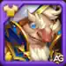
Skin Angélica (Defesa Mágica +10.650)
A Skin Angélica aumenta a Defesa Mágica, ajudando Guus a sobreviver contra causadores de dano mágico como Iris, Lars ou Orion. Embora essa skin não aumente diretamente sua cura ou efeitos das habilidades, ela torna Guus mais difícil de matar, permitindo que ele continue curando os aliados por mais tempo. É uma skin mais situacional, útil principalmente no PvP ou em lutas contra chefes com dano mágico pesado.
Prioridade de Evolução:Média – Útil para sobrevivência contra dano mágico, mas não melhora diretamente o poder de cura nem a eficácia das habilidades.
Skin de Outono (Armadura +10.650)
A Skin de Outono aumenta a Armadura, ajudando Guus a sobreviver por mais tempo contra causadores de dano físico e pressão de ataques básicos. Ela não melhora diretamente sua cura, mas a durabilidade extra ajuda Guus a permanecer ativo e continuar apoiando os aliados em lutas mais longas.
Prioridade de Evolução:Média – Útil quando equipes físicas são um problema, mas melhorias focadas em cura e no atributo principal ainda devem vir primeiro.
Prioridade de Evolução dos Artefatos do Guus - Hero Wars: Dominion Era
Descubra a melhor ordem para evoluir os artefatos do Guus e maximizar seu poder de cura e sobrevivência em Hero Wars: Dominion Era!
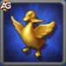
Arma: Pena do Ganso Supremo
Este artefato aumenta a Armadura do Guus e é ativado na batalha com 100% de chance. O alto bônus de Armadura ajuda a proteger toda a equipe ao aumentar a sobrevivência do Guus, algo crucial para um curandeiro.
Prioridade de Evolução:Alta – Garante que o Guus permaneça vivo por mais tempo na batalha, permitindo que continue curando. No entanto, não aumenta diretamente sua cura, por isso não é a prioridade máxima.
Livro: Tomo do Alquimista
Este artefato fornece Penetração de Armadura e Ataque Físico, mas o Guus é um curandeiro cujas habilidades não se baseiam em dano. Esses atributos não contribuem diretamente para sua cura ou sobrevivência.
Prioridade de Evolução:Baixa – Esses atributos são pouco úteis para o papel do Guus. Pode ser evoluído por último, a menos que você queira um dano extra leve dos gansos cinzentos.
Anel: Anel da Força
Este artefato aumenta a Força, que é o atributo principal do Guus. Mais Força significa mais vida e ataque físico, o que indiretamente melhora sua cura com habilidades como “Aplicar Penas” e sua resistência geral.
Prioridade de Evolução:Muito Alta – Aumenta tanto o poder de cura quanto a durabilidade. É o artefato mais importante para evoluir primeiro, visando o desempenho do Guus como curandeiro.
Prioridade de Evolução dos Glifos do Guus
Descubra quais glifos evoluir primeiro para maximizar a cura e a sobrevivência do Guus em Hero Wars: Era do Domínio.
1º Glifo – Ataque Físico:
Este glifo aumenta diretamente o poder de cura do Guus, já que todas as suas habilidades de cura escalam com ataque físico. Também aumenta o dano dos gansos cinzentos da habilidade Marcha dos Gansos, tornando-se o glifo mais impactante tanto em suporte quanto em dano.
Prioridade de Evolução:Muito Alta – Maximiza cura e dano, essencial para a funcionalidade principal do Guus.
2º Glifo – Força:
A Força é o atributo principal do Guus, aumentando tanto sua vida quanto o ataque físico. Isso melhora indiretamente sua cura e sua resistência. É um pouco menos eficaz que o ataque físico direto, mas ainda assim muito valioso.
Prioridade de Evolução:Alta – Aumento consistente de cura e durabilidade para o Guus.
3º Glifo – Vida:
Este glifo concede um grande aumento na vida do Guus, o que o ajuda a sobreviver por mais tempo em batalhas prolongadas. Não aumenta a cura, mas é crucial em combates onde Guus é alvo frequente ou sofre com dano em área (AoE).
Prioridade de Evolução:Média-Alta – Aumenta a resistência do Guus, especialmente útil em PvP ou contra equipes com muito dano em área.
4º Glifo – Armadura:
A Armadura ajuda a reduzir o dano físico recebido. Embora seja útil, Guus já cura a si mesmo e aos aliados com frequência, então estatísticas puramente defensivas como armadura são menos urgentes do que melhorar sua capacidade de cura.
Prioridade de Evolução:Média – Ajuda na sobrevivência, mas não afeta diretamente cura ou dano.
5º Glifo – Penetração de Armadura:
Embora Guus cause algum dano físico (como os gansos cinzentos), ele não foi feito para ser um causador de dano. Este glifo tem pouco valor para ele comparado aos atributos focados em cura.
Prioridade de Evolução:Baixa – Impacto mínimo no papel principal do Guus. Melhor usado em heróis focados em dano físico.
Como Counterar Guus – Hero Wars: Era do Domínio
Esses heróis neutralizam Guus ao bloquear ou desabilitar suas habilidades de cura por meio de mecânicas anti-cura ou fortes efeitos de controle.
Celeste é a anti-curadora mais eficaz contra Guus. Sua Chama Amaldiçoada bloqueia a cura em uma área e a inverte se ativada no momento certo. Isso anula completamente os efeitos de Marcha dos Gansos e Toque de Penas do Guus, transformando seu papel de suporte poderoso em algo inútil. Posicione-a para cobrir aliados importantes e negar a cura do ganso dourado.
Jorgen
Jorgen não bloqueia a cura diretamente, mas é eficaz em interromper o ritmo do Guus. Suas habilidades Tormento e Maldição do Leproso atrasam o ganho de Energia e a redirecionam, o que retarda o acesso de Guus à sua ultimate Marcha dos Gansos. Isso significa menos gansos e penas de cura durante a batalha, dando tempo para sua equipe eliminar inimigos antes que Guus se recupere. Ele é ainda mais eficaz quando combinado com heróis anti-cura ou de dano explosivo.
Lian
Lian desativa Guus com controle de encantamento. Quando inimigos a atacam (ou a seus aliados) enquanto sua passiva está ativa, ela os encanta — inclusive Guus. Isso interrompe sua Marcha dos Gansos, atrasa a cura e impede ataques básicos que aplicam penas. Lian não bloqueia a cura diretamente, mas seu controle pode deixar Guus inativo em momentos cruciais, especialmente se sua Energia estiver quase cheia.
Melhor Bandeira de Guerra para Guus – Hero Wars: Era do Domínio
Guus se beneficia mais de bandeiras que aumentam a cura ou reduzem a regeneração inimiga, ampliando sua eficácia como suporte e curandeiro baseado em dano físico.
Bandeira de Recuperação:
Essa é a melhor escolha para Guus. Ela aumenta toda a cura em 10%, o que melhora diretamente os efeitos de Marcha dos Gansos, Penas Douradas, Toque de Penas e Ganso Guardião. Como Guus é um dos heróis mais focados em cura do jogo, essa bandeira amplifica seu papel principal em qualquer equipe.
Benefício para Guus e o Time: Aumenta significativamente sua eficiência geral de cura, ajudando os aliados a sobreviver a danos explosivos e resistir por mais tempo em batalhas prolongadas.
Bandeira da Decadência:
Essa é uma excelente escolha secundária quando Guus está em uma equipe de controle ou desgaste. Reduzir a cura da equipe inimiga em 10% dificulta que os suportes adversários superem a pressão de cura de Guus, especialmente em confrontos espelhados ou contra heróis como Aidan, Thea ou Celeste.
Benefício para Guus e o Time: Enfraquece a sustentação da equipe inimiga, oferecendo vantagem de cura ao longo do tempo para a equipe de Guus.
Conclusão
Guus é uma adição encantadora e poderosa à sua equipe em Hero Wars: Dominion Era. Embora pareça apenas um velhinho excêntrico com um bando de gansos, sua habilidade de sustentar sua equipe, evitar danos letais e atrapalhar os inimigos o torna um herói de suporte valioso. Se você está procurando um curandeiro que ofereça mais do que apenas cura bruta alguém que possa proteger os aliados ao longo do tempo e quebrar o ritmo inimigo então Guus é a escolha ideal.
Com os investimentos certos em habilidades e artefatos, Guus se transforma em uma muralha emplumada entre sua equipe e a derrota. Não subestime o poder do ganso!
Sugestões de Vídeo:
Video: Guus Hero Wars Dominion Era: Guia Completo das Habilidades e Evento dos Gansos! ✨
Você gostou do nosso Guia do Guus para Hero Wars Web e Facebook? Há algo que não entendeu ou gostaria de sugerir mudanças? Convidamos você a se juntar à nossa sessão de comentários na página do Alexandre Games Blog. Não hesite em expressar sua opinião, clarificar suas dúvidas e compartilhar sua sugestões. Clique no botão abaixo para começar: